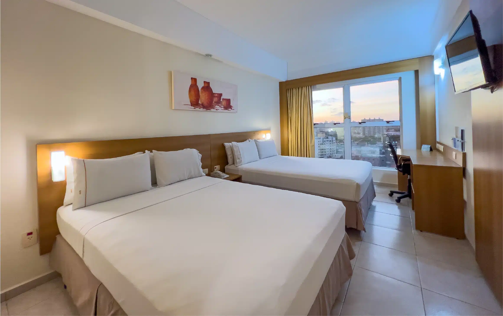
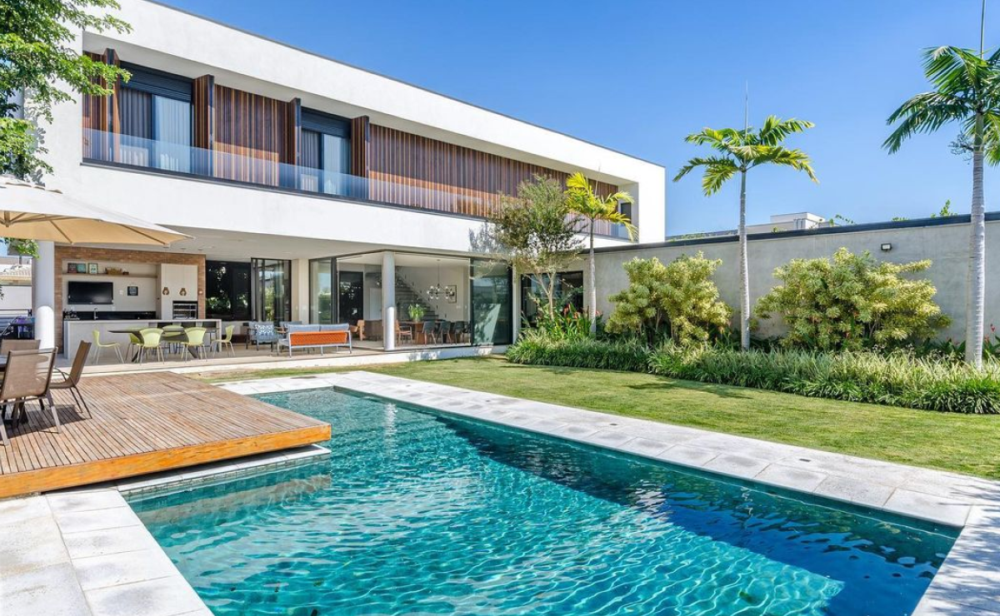
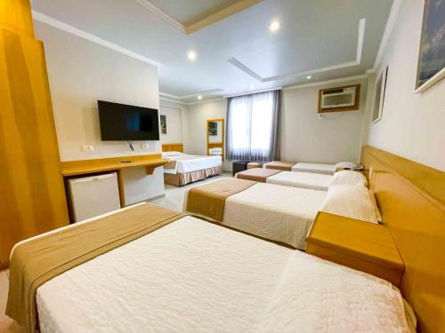
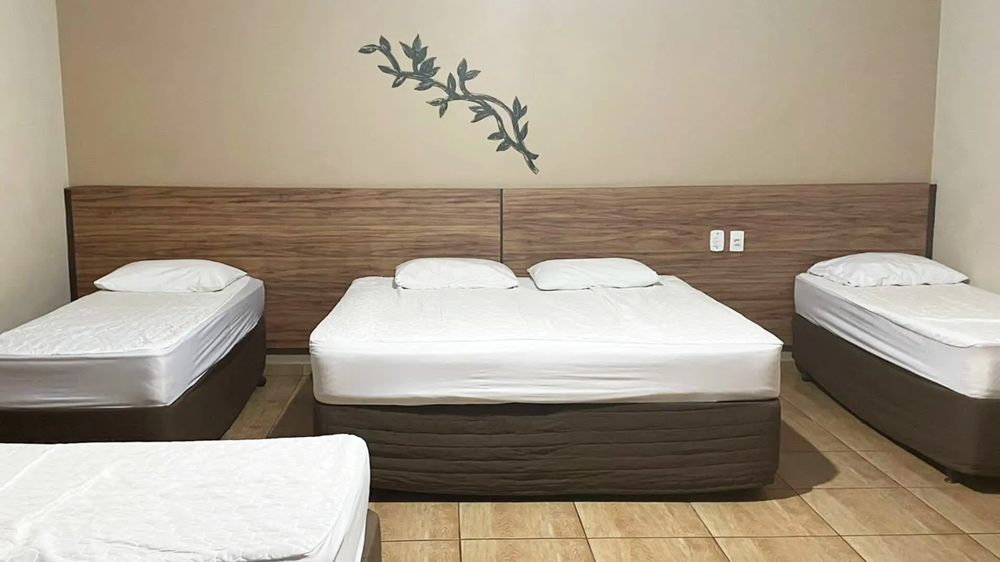
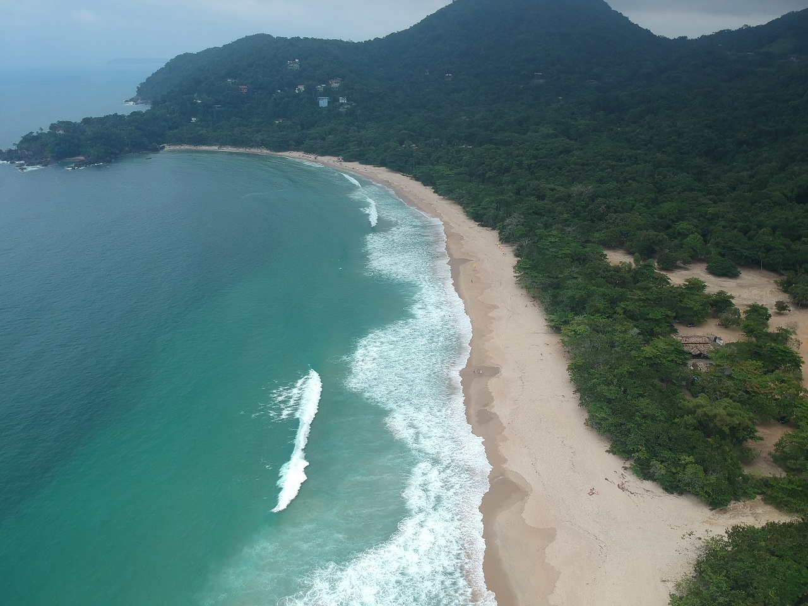
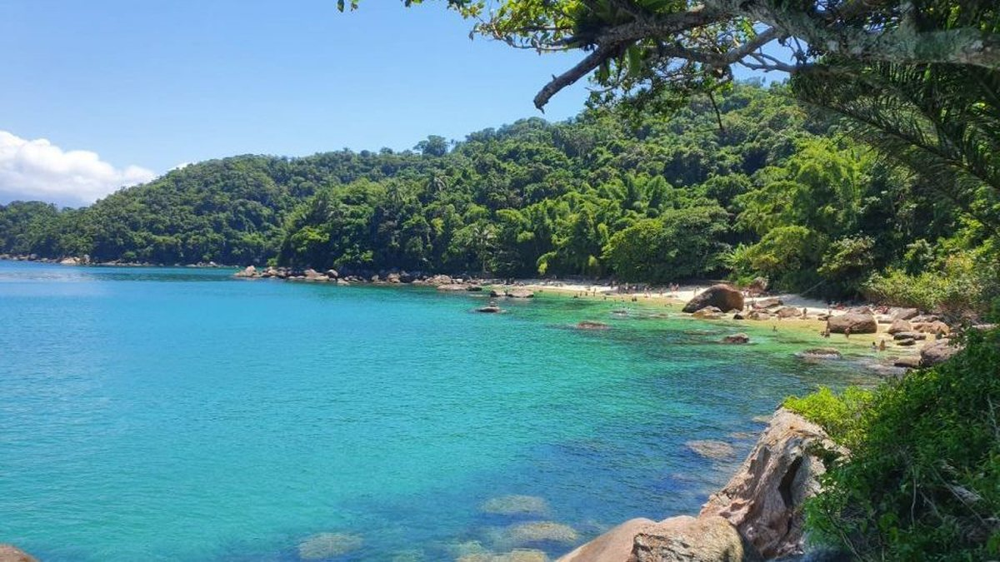
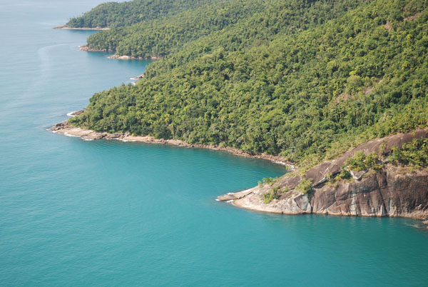
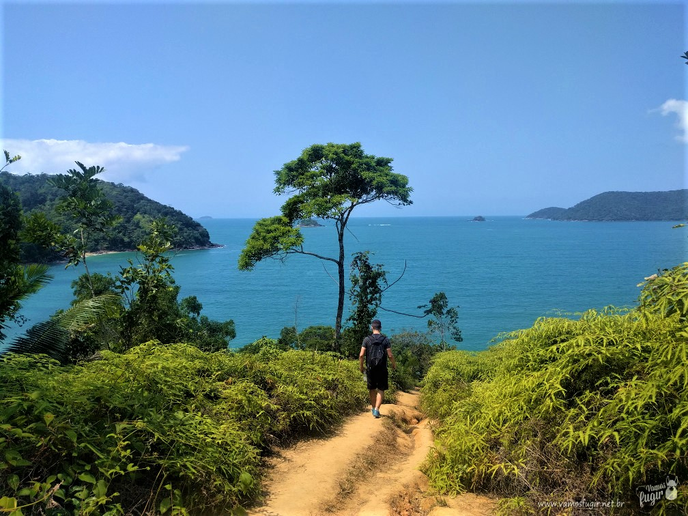
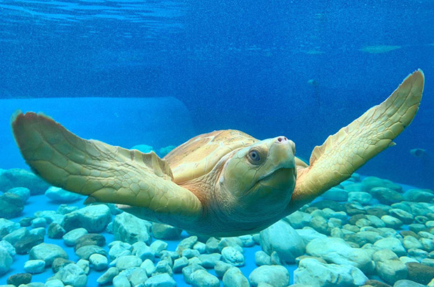

Suíte Standard
Um espaço confortável para casais que desejam aproveitar Ubatuba.
Capacidade: 2 pessoas
Comodidades: Ar-condicionado, TV, Wi-Fi e frigobar.
UBATUBA • SÃO PAULO
Conheça a Aestus Serenus, uma pousada acolhedora criada para quem deseja aproveitar as praias, a natureza e as belezas de Ubatuba.
Conheça nossas acomodaçõesCONHEÇA

A Aestus Serenus é uma pousada fictícia localizada em Ubatuba, no litoral norte de São Paulo. Nosso objetivo é oferecer conforto e tranquilidade para os visitantes.
O ambiente foi pensado para quem deseja passar alguns dias próximo à natureza, conhecer as praias da região e descansar depois de um dia de passeio.
Espaços para descansar e aproveitar.
Comece o dia com uma refeição especial.
Internet disponível para os hóspedes.
CONFORTO

Um espaço confortável para casais que desejam aproveitar Ubatuba.
Capacidade: 2 pessoas
Comodidades: Ar-condicionado, TV, Wi-Fi e frigobar.

Uma opção maior para quem procura ainda mais espaço durante a viagem.
Capacidade: 3 pessoas
Comodidades: Ar-condicionado, TV, Wi-Fi, frigobar e varanda.

Espaço pensado para famílias e pequenos grupos aproveitarem juntos.
Capacidade: 5 pessoas
Comodidades: Ar-condicionado, TV, Wi-Fi, frigobar e varanda.
DESCUBRA
Além de descansar na pousada, você pode conhecer algumas das belezas naturais e atrações de Ubatuba.

Uma praia cercada pela Mata Atlântica, conhecida por suas águas e paisagens.
Uma das praias conhecidas de Ubatuba, muito procurada por quem gosta de natureza.

Ilha com águas claras e paisagens naturais, bastante procurada pelos visitantes.

Área de preservação que reúne trilhas, praias e muita natureza.

Trilha que passa por diferentes praias e proporciona contato com a natureza.

Projeto voltado à educação ambiental e à conservação das tartarugas marinhas.

Uma opção para quem deseja conhecer as paisagens naturais da região.
Região com restaurantes, comércio, construções históricas e opções de passeio.
ONDE ESTAMOS
● Rua das Palmeiras, 250
Ubatuba - SP
Estamos localizados em uma região tranquila de Ubatuba, com acesso a diferentes praias e atrações turísticas.
Carro: Fácil acesso de carro
Mar: Próximo às praias
Natureza: Cercado pela natureza
Localização fictícia da pousada
FALE CONOSCO
Gostaria de conhecer a Aestus Serenus? Envie uma mensagem pelo formulário.
Telefone: (19) 2806-4212
E-mail: contato@aestusserenus.com
Localização: Ubatuba - São Paulo